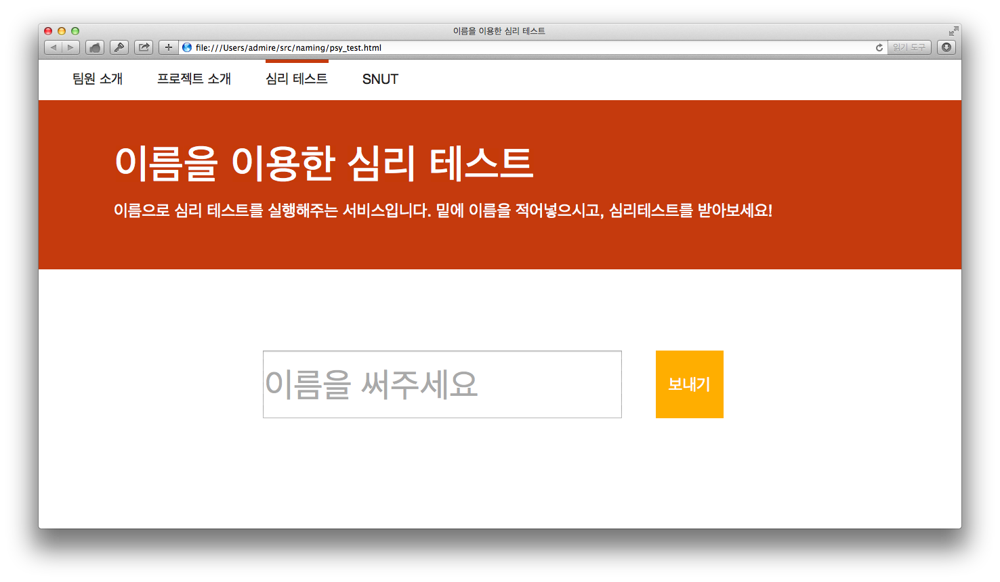
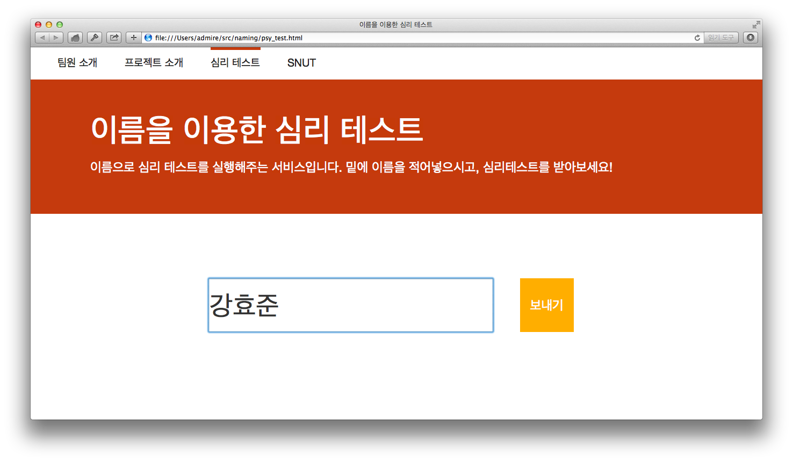
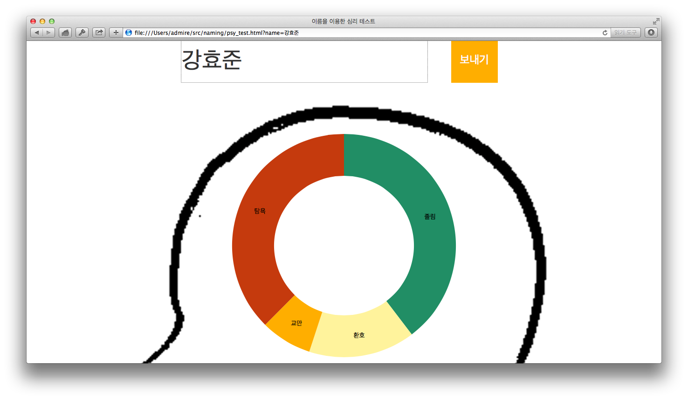
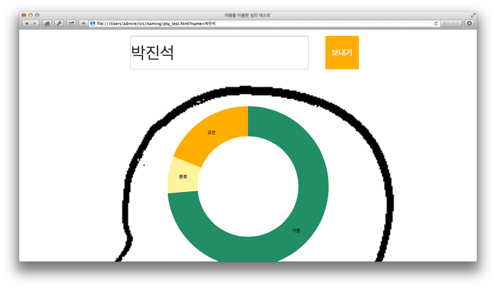

자바스크립트를 이용하여 이름을 16진수 코드로 바꾸고, 자체 개발한 알고리즘을 이용하여 심리 상태를 선택하고, 심리 상태에 대한 확률도 선택합니다. jQuery, d3.js 같은 라이브러리를 이용하여, 선택된 심리 상태, 확률을 그래프로 한눈에 확인할 수 있도록 도와줍니다.
사용 방법은 아주 간단합니다. 이름을 써넣는 칸에 이름을 써넣습니다. 이름을 써넣고 보내기를 누르면, 바로 밑에 심리테스트 결과가 표시됩니다. 사람 이름마다, 날짜에 따라 다른 심리 상태와 다른 확률로 심리 상태가 표시됩니다.
   